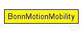
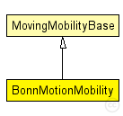

This documentation is released under the Creative Commons license
This documentation is released under the Creative Commons licenseUses the native file format of BonnMotion (http://www.cs.uni-bonn.de/IV/BonnMotion/).
The file is a plain text file, where every line describes the motion of one host. A line consists of one or more (t, x, y, [z]) tuples of real numbers, like:
t1 x1 y1 t2 x2 y2 t3 x3 y3 t4 x4 y4 ... or t1 x1 y1 z1 t2 x2 y2 z2 t3 x3 y3 z3 t4 x4 y4 z4...
The meaning is that the given node gets to (xk,yk) at tk. There's no separate notation for wait, so x and y coordinates will be repeated there.
Author: Andras Varga
The following diagram shows usage relationships between types. Unresolved types are missing from the diagram. Click here to see the full picture.
The following diagram shows inheritance relationships for this type. Unresolved types are missing from the diagram. Click here to see the full picture.
| Name | Type | Description |
|---|---|---|
| MovingMobilityBase | simple module |
Abstract base module for mobility models. |
| Name | Type | Default value | Description |
|---|---|---|---|
| debug | bool | false | |
| constraintAreaMinX | double | -1m/0 |
min x position of the constraint area, unconstrained by default (negative infinity) |
| constraintAreaMinY | double | -1m/0 |
min y position of the constraint area, unconstrained by default (negative infinity) |
| constraintAreaMinZ | double | -1m/0 |
min z position of the constraint area, unconstrained by default (negative infinity) |
| constraintAreaMaxX | double | 1m/0 |
max x position of the constraint area, unconstrained by default (positive infinity) |
| constraintAreaMaxY | double | 1m/0 |
max y position of the constraint area, unconstrained by default (positive infinity) |
| constraintAreaMaxZ | double | 1m/0 |
max z position of the constraint area, unconstrained by default (positive infinity) |
| updateInterval | double | 0.1s |
the simulation time interval used to regularly signal mobility state changes and update the display |
| is3D | bool | false |
whether the trace file contains triplets or quadruples |
| traceFile | string |
the BonnMotion trace file |
|
| nodeId | int |
selects line in trace file; -1 gets substituted to parent module's index |
| Name | Value | Description |
|---|---|---|
| display | i=block/cogwheel | |
| class | BonnMotionMobility |
// // Uses the native file format of BonnMotion (http://www.cs.uni-bonn.de/IV/BonnMotion/). // // The file is a plain text file, where every line describes the motion // of one host. A line consists of one or more (t, x, y, [z]) tuples of real // numbers, like: // // t1 x1 y1 t2 x2 y2 t3 x3 y3 t4 x4 y4 ... // or // t1 x1 y1 z1 t2 x2 y2 z2 t3 x3 y3 z3 t4 x4 y4 z4... // // The meaning is that the given node gets to (xk,yk) at tk. There's no // separate notation for wait, so x and y coordinates will be repeated there. // // @author Andras Varga // simple BonnMotionMobility extends MovingMobilityBase { parameters: bool is3D = default(false); // whether the trace file contains triplets or quadruples string traceFile; // the BonnMotion trace file int nodeId; // selects line in trace file; -1 gets substituted to parent module's index @class(BonnMotionMobility); }
This documentation is released under the Creative Commons license